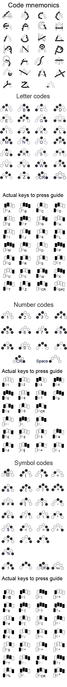

|
These are the instructions you’ve been waiting for. SiWriter outputs a character when you type its coded pattern. The patterns are created by selecting combinations of the five ‘fingerprint’ keys. To help you remember the patterns, try and imagine the shape of the character you want to type and visualise it outlined in the five main keys. Have a look at the Cykey site for further information. Like the Cykey before it, the SiWriter reads the 'keys' or 'finger prints' as they are pressed but only acts on the presses when the last one is released. The images show the ‘finger prints’ patterns for most of the codes available in SiWriter. These may well be expanded, but won’t be changed. So you can get used to them now! There are ‘shift’ keys to change key outputs to ‘Capitals’, ‘Numbers’ or ‘Symbols’. By default, SiWriter is in lower case letter mode. To get an upper case letter, tap the lower Shift key once – an Orange dot shows - use it once and it will then revert to lower case. Tapping twice will operate a Shift Lock, with a Green dot. Tap that key once to clear Shift Lock. Similarly, for Numbers, tap the upper Shift key once – and an Orange dot appears. Again, tapping twice will operate a Shift lock, with a Green dot, and another tap will clear it. For Symbols, tap twice on both Shift keys, and get a light in both keys. To clear Symbols mode, tap either the Number or Shift buttons once. To get back to standard behaviour remove all the dots. I have provided both a ‘schematic’ image and an ‘Actual keys to press guide’ because some people find one or the other confusing to look at for some reason. The help page now has an extra button to select and set an image for the background in both Landscape and Portrait orientations. Try and use an image with a small file size - that is, not much detail - or the result may be visually confusing and the app may run more slowly. |

|